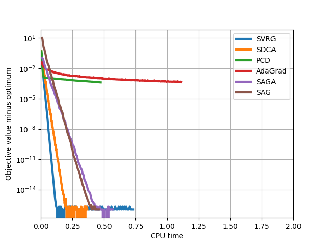

Note
Click here to download the full example code
L2 solver comparison¶
This example compares different solvers with L2 regularization.
Out:
SVRG
SDCA
PCD
AdaGrad
SAGA
SAG
print(__doc__)
import sys
import time
import numpy as np
import matplotlib.pyplot as plt
from sklearn.datasets import make_classification
from sklearn.datasets import fetch_20newsgroups_vectorized
from lightning.classification import SVRGClassifier
from lightning.classification import SDCAClassifier
from lightning.classification import CDClassifier
from lightning.classification import AdaGradClassifier
from lightning.classification import SAGAClassifier, SAGClassifier
from lightning.impl.adagrad_fast import _proj_elastic_all
class Callback(object):
def __init__(self, X, y):
self.X = X
self.y = y
self.obj = []
self.times = []
self.start_time = time.time()
self.test_time = 0
def __call__(self, clf, t=None):
test_time = time.time()
if hasattr(clf, "_finalize_coef"):
clf._finalize_coef()
if t is not None:
_proj_elastic_all(clf.eta, t, clf.g_sum_[0], clf.g_norms_[0],
alpha1=0, alpha2=clf.alpha, delta=0,
w=clf.coef_[0])
y_pred = clf.decision_function(self.X).ravel()
loss = (np.maximum(1 - self.y * y_pred, 0) ** 2).mean()
coef = clf.coef_.ravel()
regul = 0.5 * clf.alpha * np.dot(coef, coef)
self.obj.append(loss + regul)
self.test_time += time.time() - test_time
self.times.append(time.time() - self.start_time - self.test_time)
try:
dataset = sys.argv[1]
except:
dataset = "synthetic"
if dataset == "news20":
bunch = fetch_20newsgroups_vectorized(subset="all")
X = bunch.data
y = bunch.target
y[y >= 1] = 1
alpha = 1e-4
eta_svrg = 1e-1
eta_adagrad = 1
xlim = (0, 20)
else:
X, y = make_classification(n_samples=10000,
n_features=100,
n_classes=2,
random_state=0)
alpha = 1e-2
eta_svrg = 1e-3
eta_adagrad = 1e-2
xlim = [0, 2]
y = y * 2 - 1
# make sure the method does not stop prematurely, we want to see
# the full convergence path
tol = 1e-24
clf1 = SVRGClassifier(loss="squared_hinge", alpha=alpha, eta=eta_svrg,
n_inner=1.0, max_iter=100, random_state=0, tol=1e-24)
clf2 = SDCAClassifier(loss="squared_hinge", alpha=alpha,
max_iter=100, n_calls=X.shape[0]/2, random_state=0, tol=tol)
clf3 = CDClassifier(loss="squared_hinge", alpha=alpha, C=1.0/X.shape[0],
max_iter=50, n_calls=X.shape[1]/3, random_state=0, tol=tol)
clf4 = AdaGradClassifier(loss="squared_hinge", alpha=alpha, eta=eta_adagrad,
n_iter=100, n_calls=X.shape[0]/2, random_state=0)
clf5 = SAGAClassifier(loss="squared_hinge", alpha=alpha,
max_iter=100, random_state=0, tol=tol)
clf6 = SAGClassifier(loss="squared_hinge", alpha=alpha,
max_iter=100, random_state=0, tol=tol)
plt.figure()
data = {}
for clf, name in ((clf1, "SVRG"),
(clf2, "SDCA"),
(clf3, "PCD"),
(clf4, "AdaGrad"),
(clf5, "SAGA"),
(clf6, "SAG")
):
print(name)
cb = Callback(X, y)
clf.callback = cb
if name == "PCD" and hasattr(X, "tocsc"):
clf.fit(X.tocsc(), y)
else:
clf.fit(X, y)
data[name] = (cb.times, np.array(cb.obj))
# get best value
fmin = min([np.min(a[1]) for a in data.values()])
for name in data:
plt.plot(data[name][0], data[name][1] - fmin, label=name, lw=3)
plt.xlim(xlim)
plt.yscale('log')
plt.xlabel("CPU time")
plt.ylabel("Objective value minus optimum")
plt.legend()
plt.grid()
plt.show()
Total running time of the script: ( 0 minutes 5.165 seconds)